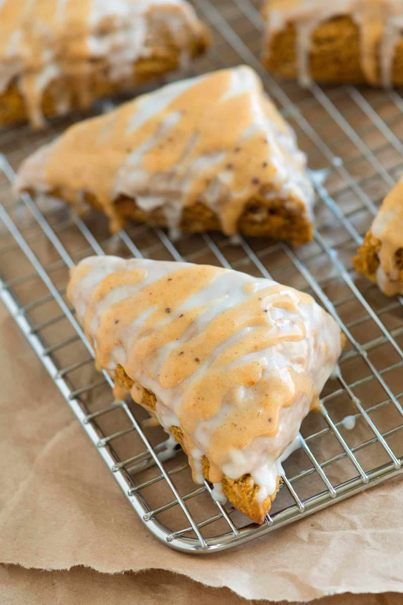

Spiced Pumpkin Scones

A fall favorite to spice up any morning
These are modeled after a coffee shop scone that I could not justify buying over and over when I knew I could save myself a bit of money by making them myself. After many different attempts, I settled on this as my preferred iteration. Enjoy!
Ingredients
The Scones:
- 2 Cups(280g) all-purpose flour
- 1/3 Cup(65g) brown sugar
- 1 Tsp baking powder
- 1/2 Tsp baking soda
- 1/2 Tsp kosher salt
- 1 Tsp ground cinnamon
- 3/4 Tsp ground ginger
- 3/4 Tsp ground cloves
- 1/2 Tsp ground nutmeg
- 8 Tbsp(115g or 1 stick) cold unsalted butter
- 1/2 Cup(115g) pumpkin puree
- 1 Tbsp molasses
- 3 Tbsp half and half or cream
- 1 large egg
- 2 Tsp vanilla extract
Simple Glaze:
- 1 Cup(125g) powdered sugar, sifted
- 1 to 2 Tbsp half and half or cream
Pumpkin Spice Glaze:
- 1 Cup (125g) powdered sugar, sifted
- 1 Tbsp pumpkin puree
- 1/8 Tsp cloves
- 1/8 Tsp ground nutmeg
- 1/8 Tsp ground ginger
- 1/4 Tsp ground cinnamon
- 1 to 2 Tbsp half and half or cream
Process
The Scones:
- Center a rack in the middle of the oven and heat oven to 400ºF(205ºC). Line a baking sheet with parchment paper.
- Whisk the flour, sugar, baking powder, baking soda, salt, cinnamon, ginger, cloves and nutmeg together until blended.
- Cut the butter into small cubes then scatter over the flour mixture. Use two knives or a pastry cutter to “cut” the butter into the flour until the mixture resembles coarse cornmeal with a few pea-sized bits of butter, about 5 minutes. (You could also use a food processor for this – if using, add flour mixture to the bowl of a food processor, add the cold butter cubes. Then pulse three to four times until the mixture looks like coarse cornmeal or crumbs).
- In a separate bowl, whisk the pumpkin puree, molasses, half and half, egg and vanilla extract until blended.
- Stir the pumpkin mixture into the flour and butter mixture until a soft dough forms. Transfer the dough to a floured surface. Knead three to four times until it comes together.
- Pat the dough into a 10-inch by 7-inch rectangle (a rolling pin can be used here). Cut the rectangle in half lengthwise then cut into 4 even pieces crosswise, making eight rectangles. Cut each rectangle into two triangles, making 16 scones
- Transfer scones to the baking sheet then bake 10 to 15 minutes or until golden brown and a toothpick inserted into the middle comes out clean. Transfer to a wire rack and let cool completely.
The Glazes:
- For the simple sugar glaze, add the sugar to a medium bowl then add one tablespoon of half and half. Stir then judge the consistency. If when you pick a spoon up and out of the glaze it slowly drizzles back into the glaze, it is fine. If it is too thick, add a little more half and half (a little goes a long way, here). If it is too thin, add a little more powdered sugar.
- In another bowl, make the pumpkin spice glaze. Combine the sugar, pumpkin puree, spices then add one tablespoon of half and half. Stir and check consistency. Adjust the same way as you would the simple glaze.
The Finishing Touches:
- Dip each cooled scone directly into the simple sugar glaze then place glazed side up back onto the cooling rack.
- Use a spoon to drizzle a zigzag pattern of the pumpkin spice glaze across each scone. Wait 15 minutes or until the glaze has set then enjoy!
- Store baked and glazed scones covered with plastic wrap. I recommend storing in the refrigerator if storing them for more than a day or 2. They will lose a little moisture, but will still taste great.